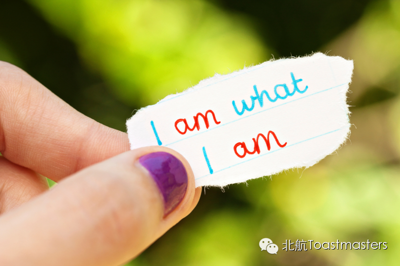

First and Last
Time: 19:30-21:30, Friday, Jan 9th
Venue: Room A209, New Main Building, Beihang University
Toastmaster: Stan
Table Topic Master: Sophie
"First" and "Last" are two words have opposite meaning, while sometimes they refer to the same thing and make it significant. Have you ever met the first and last moment in your life? What’s your story about it? Just at the one-year finish and new year start of Beihang Toastmaster, our talented Sophie will light up a spark in your mind. Come on and join us on this Friday!
Prepared Speech
Accept who you are
CC1 Jill

Life is a journey to explore the world and know ourselves. One of the most terrifying and precious thing in our life may be the courage to accept ourselves completely, in spite of being unacceptable. Our new member Jill is a heart-warming girl and she will give us an energetic answer. Let's hope for her shining debut!
Prepared Speech
Rascal Radio
- A Leadership Development App
AC3 Haibo Liang
Leadership is the key skill of Toastmaster members. And I believe the most effective approach to improve is communication and share. Haibo is a senior member who has been a Toastmaster for nearly seven years in USA. Come to absorb Haibo's new idea with us tonight!
Map
Our meeting venue is RoomA209, New Main Building, Beihang University (北航新主楼A209房间). Click here to see large map. And you can phone to Keven for help.
TEL: 15810539853
See you in the meeting!

https://mp.weixin.qq.com/s/7Y4o_XUYxKbbk0fvO8yxRw
本页为抢救式本地归档，图文已永久保存。